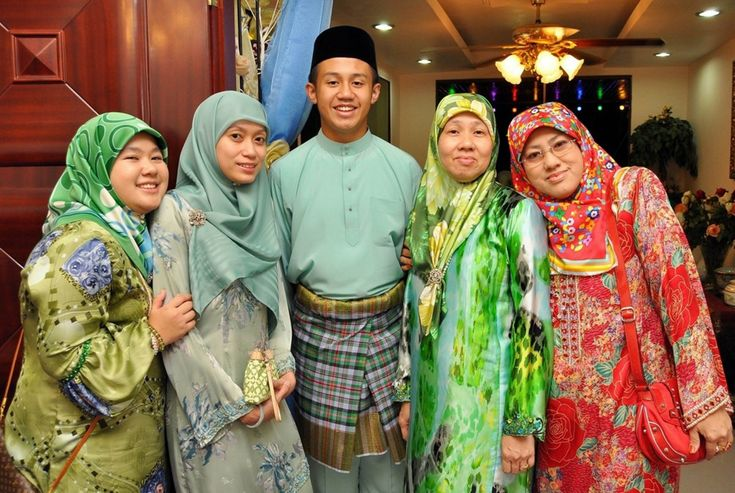
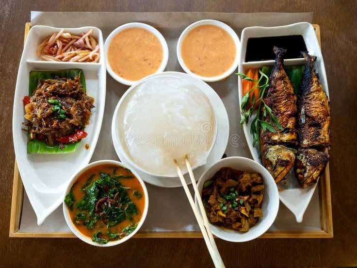

Brunei-Muara
The smallest but busiest district. It is home to the capital, the famous mosques, Kampong Ayer and most hotels.
Brunei Darussalam sits on the northern coast of Borneo, between Malaysia's Sarawak state and the South China Sea. It is a small country, and you can drive across much of it in a short time.
Brunei is a constitutional sultanate. Its official philosophy, Melayu Islam Beraja (MIB), combines Malay culture, the Islamic faith and the monarchy, and it shapes daily life here.
To read more about the country's history and government, visit the Brunei Government portal.

| Capital city | Bandar Seri Begawan |
|---|---|
| Population | About 450,000 people |
| Languages | Malay is the official language. English is widely spoken. |
| Religion | Islam is the official religion. Buddhists, Christians and others also live here. |
| Money | Brunei dollar (BND). It has the same value as the Singapore dollar, and both can be used. |
| Time zone | GMT+8 Follows as Singapore and Malaysia |
| Driving | Left side of the road |
| Plugs | Three square pins |
Brunei is split into four districts. Each one has its own character.
The smallest but busiest district. It is home to the capital, the famous mosques, Kampong Ayer and most hotels.
A quiet district of villages, beaches and Tasek Merimbun, the country's largest natural lake.
The largest district and the centre of Brunei's oil and gas industry, with the towns of Seria and Kuala Belait.
Green and peaceful, and almost covered in rainforest. It is joined to the rest of the country by Temburong Bridge.
Brunei is a friendly place.
Important:Brunei is an Islamic country. Alcohol is restricted
Most people speak English, but locals love it when visitors try a few words of Malay.
| English | Malay |
|---|---|
| Hello (a Muslim greeting) | Assalamualaikum |
| Good morning | Selamat pagi |
| Thank you | Terima kasih |
| You're welcome | Sama-sama |
| How much is this? | Berapa Harganya? |
| Yes / No | Ya / Tidak |

Bruneian food is a mix of Malay, Chinese, Indian and indigenous flavours. Food is an important part of life here, and families and friends often eat together.
Many restaurants are halal, so check the sign on the door or ask staff if you are unsure.